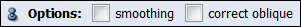

Ports
Options

If the smoothing option is enabled, two more ports will allow you to request a Gaussian filtering of the raw data prior to the computation of the tensor field. The correct oblique option will enable a correction of the gradient directions that are read from the input data if an oblique slice scan is detected. If the gradient directions are already corrected, this option should remain off.
Size
Sigma
Buttons

This port supports the workflow of the ComputeTensor module.
- Attach selected data: The ComputeTensor module needs to be connected to many gradient weighted image dataset all loaded into Amira. Select the loaded gradient weighted images in the object pool and press this button. All selected datasets will be added as gradient weighted images.
- Import gradients: The gradient for each gradient weighted image can be imported into the user interface from a text file. The file should contain the gradients as single lines with 3 components each. After pressing this button the gradients are displayed in the gradient ports of this module.
- Store gradients in files: Gradients specified in the user interface can be permanently stored in the data objects of the pool. This button will add the gradient to each gradient weighted image as a parameter entry called DTIGradient. If a data set with such an entry is connected to ComputeTensor its value is used as gradient.
G1,G2,...
Ports allow you to supply user-defined Gradients which are used for the computation of the diffusion tensor. The order of these ports corresponds to the order of the data objects connected to the module.